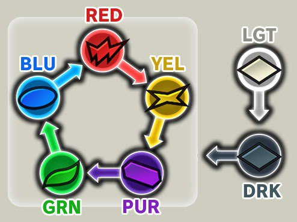
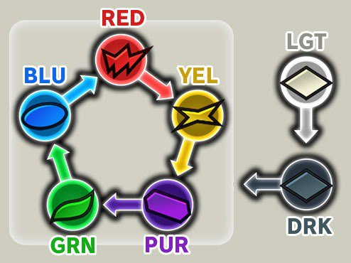

елементи персонажів: – Підтримка Захист Рукопашний бій Далекий Торкніться персонажа, щоб перевірити його бойовий стиль. Наприклад; Кріллін — персонаж захисного типу, Шалот — персонаж ближнього бою, Гоку (екстремальний); рукопашний бій, Super Saiyan Goku; дальній тип, Дао; тип опори. Ви можете скористатися вибором персонажів на основі елементів; ось як: – Червоний елемент > жовтий елемент Жовтий > Фіолетовий Фіолетовий > Зелений Зелений > Синій Синій > Червоний Наприклад; перевірити елемент ворожого персонажа; якщо він червоний, виберіть символ синього елемента. Якщо він жовтий, виберіть символ червоного елемента. Перейдіть до розділу символів -> утримуйте символ і перевірте його елемент.
 
